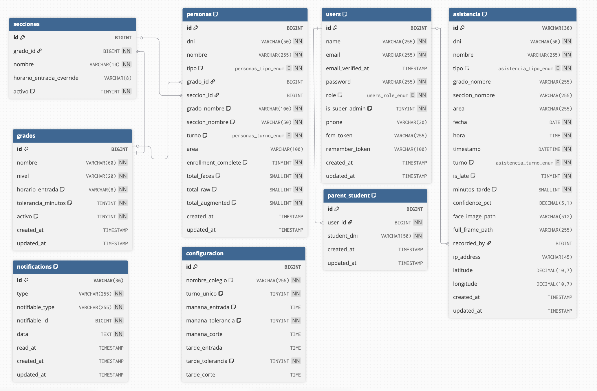

Plataforma de Datos del Sistema
Modelo entidad-relación, modelo lógico, normalización, diccionario de datos de las 9 tablas MySQL principales y estrategia de seguridad y administración de la base de datos QhawAI.
asistencia guarda nombre, grado y sección como snapshot para que los reportes históricos sean inmunes a cambios posteriores en los datos del estudiante.
1.1 Modelo Entidad-Relación
USERS (1) ──< PARENT_STUDENTS >── (1) PERSONASUSERS (1) ──< ASISTENCIAPERSONAS (1) ──< ASISTENCIAGRADOS (1) ──< SECCIONESGRADOS (1) ──< PERSONAS [via grado_id]SECCIONES (1) ──< PERSONAS [via seccion_id]AREAS (1) ──< PERSONAS [via area nombre]USERS (1) ──< NOTIFICATIONS [polimórfico]
UNIQUE KEY (dni, fecha) en tabla asistencia garantiza máximo un registro por persona por día a nivel de base de datos.
La configuración global tiene fila única: configuracion.id = 1 siempre.

1.3 Normalización
asistencia guarda nombre, grado_nombre y seccion_nombre redundantemente. Desnormalización intencional para reportes históricos.1.4 Diccionario de Datos
Tabla: asistencia
Registro histórico de cada evento de asistencia.
| Campo | Tipo | Nulo | Descripción |
|---|---|---|---|
| id | VARCHAR(36) | NO | UUID generado por Laravel, PK |
| dni | VARCHAR(20) | NO | DNI de la persona (snapshot) |
| nombre | VARCHAR(255) | NO | Nombre al momento del registro |
| tipo | ENUM('estudiante','docente') | NO | 'estudiante' o 'docente' |
| grado_nombre | VARCHAR(255) | SÍ | Grado al momento del registro (snapshot) |
| seccion_nombre | VARCHAR(255) | SÍ | Sección al momento del registro (snapshot) |
| fecha | DATE | NO | Fecha del registro |
| hora | TIME | NO | Hora de llegada |
| turno | ENUM('manana','tarde') | NO | 'manana' o 'tarde' |
| is_late | TINYINT(1) | NO | 1 si llegó tarde, 0 si puntual |
| minutos_tarde | SMALLINT UNSIGNED | NO | Minutos de retraso (máx 65,535) |
| confidence_pct | DECIMAL(5,1) | SÍ | Confianza del reconocimiento (0–100) |
| face_image_path | VARCHAR(512) | SÍ | URL o path al recorte del rostro (hasta 512 chars) |
| full_frame_path | VARCHAR(255) | SÍ | URL al frame panorámico |
| recorded_by | BIGINT UNSIGNED | SÍ | FK a users.id (operador) |
| ip_address | VARCHAR(45) | SÍ | IP del dispositivo de registro |
| latitude | DECIMAL(10,7) | SÍ | GPS — latitud |
| longitude | DECIMAL(10,7) | SÍ | GPS — longitud |
Tabla: personas
Catálogo maestro de estudiantes y docentes.
| Campo | Tipo | Default | Descripción |
|---|---|---|---|
| id | BIGINT UNSIGNED AUTO_INC | — | PK interna autoincrementada |
| dni | VARCHAR(50) | — | DNI nacional, UNIQUE KEY |
| nombre | VARCHAR(255) | — | Nombre completo |
| tipo | ENUM('estudiante','docente') | 'estudiante' | Tipo de persona |
| grado_id | BIGINT UNSIGNED | NULL | FK a grados.id (nullable) |
| seccion_id | BIGINT UNSIGNED | NULL | FK a secciones.id (nullable) |
| grado_nombre | VARCHAR(100) | '' | Nombre del grado (snapshot desnorm.) |
| seccion_nombre | VARCHAR(50) | '' | Nombre de la sección (snapshot) |
| turno | ENUM('manana','tarde') | 'manana' | Turno asignado |
| area | VARCHAR(100) | NULL | Área del docente (solo tipo='docente') |
| enrollment_complete | TINYINT(1) | 0 | 1 = fotos de reconocimiento listas |
| total_faces | SMALLINT UNSIGNED | 0 | Fotos de rostro recortadas disponibles |
| total_raw | SMALLINT UNSIGNED | 0 | Fotos originales cargadas |
| total_augmented | SMALLINT UNSIGNED | 0 | Fotos aumentadas generadas |
Tabla: users
| Campo | Tipo | Descripción |
|---|---|---|
| id | BIGINT UNSIGNED AUTO_INC | PK |
| name | VARCHAR(255) | Nombre completo del usuario |
| VARCHAR(255) UNIQUE | Email para login | |
| email_verified_at | TIMESTAMP NULL | Verificación de email (nullable) |
| password | VARCHAR(255) | Hash bcrypt (factor 12) |
| role | ENUM('admin','parent') | Solo dos roles: administrador o padre de familia |
| is_super_admin | TINYINT(1) | Permite operaciones críticas (eliminar, reset) |
| phone | VARCHAR(30) NULL | Teléfono del padre (opcional) |
| fcm_token | VARCHAR(255) NULL | Token Firebase FCM para push notifications |
| remember_token | VARCHAR(100) NULL | Token sesión persistente de Laravel |
Tabla: grados
| Campo | Tipo | Default | Descripción |
|---|---|---|---|
| id | BIGINT UNSIGNED | AUTO_INC | PK |
| nombre | VARCHAR(60) | — | Nombre del grado |
| nivel | VARCHAR(20) | — | 'primaria' o 'secundaria' |
| horario_entrada | VARCHAR(8) | '07:30' | Hora de entrada HH:MM |
| tolerancia_minutos | TINYINT | 10 | Minutos antes de tardanza |
| activo | TINYINT(1) | 1 | 0 = desactivado |
Tabla: configuracion (fila única)
| Campo | Default | Descripción |
|---|---|---|
| id | 1 (siempre) | PK único del sistema |
| nombre_colegio | 'Mi Colegio' | Nombre de la institución |
| turno_unico | 1 | 1 = solo turno mañana |
| manana_entrada | '07:30:00' | Hora de entrada mañana |
| manana_tolerancia | 10 | Tolerancia en minutos |
| manana_corte | NULL | Hora de corte mañana |
| tarde_entrada | NULL | Hora de entrada tarde |
| tarde_tolerancia | 10 | Tolerancia tarde |
| tarde_corte | NULL | Hora de corte tarde |
Tabla: areas
Catálogo de áreas académicas para docentes.
| Campo | Tipo | Default | Descripción |
|---|---|---|---|
| id | BIGINT UNSIGNED AUTO_INC | — | PK |
| nombre | VARCHAR(100) UNIQUE | — | Nombre del área (ej. 'Matemáticas', 'Administración') |
| activo | TINYINT(1) | 1 | 0 = área desactivada |
| created_at | TIMESTAMP | NULL | Fecha de creación |
| updated_at | TIMESTAMP | NULL | Última actualización |
Tabla: secciones
Secciones agrupadas por grado.
| Campo | Tipo | Default | Descripción |
|---|---|---|---|
| id | BIGINT UNSIGNED AUTO_INC | — | PK |
| grado_id | BIGINT UNSIGNED | — | FK a grados.id (CASCADE delete) |
| nombre | VARCHAR(10) | — | Nombre de la sección (ej. 'A', 'B') |
| horario_entrada_override | VARCHAR(8) | NULL | Override de hora de entrada solo para esta sección |
| activo | TINYINT(1) | 1 | 0 = sección desactivada |
Tabla: parent_student
Relación entre usuarios padre y sus estudiantes vinculados.
| Campo | Tipo | Default | Descripción |
|---|---|---|---|
| id | BIGINT UNSIGNED AUTO_INC | — | PK |
| user_id | BIGINT UNSIGNED | — | FK a users.id (CASCADE delete) |
| student_dni | VARCHAR(50) | — | DNI del estudiante vinculado (ref. a personas.dni) |
| created_at | TIMESTAMP | NULL | Fecha de vinculación |
| updated_at | TIMESTAMP | NULL | Última actualización |
UNIQUE KEY (user_id, student_dni) — un padre no puede vincular al mismo estudiante dos veces.
4. Seguridad y Administración
Roles de base de datos
| Permiso | qhawai_app | qhawai_readonly | qhawai_dba |
|---|---|---|---|
| SELECT | SÍ | SÍ | SÍ |
| INSERT / UPDATE | SÍ | NO | SÍ |
| DELETE | SÍ | NO | SÍ |
| DDL (CREATE/ALTER) | NO | NO | SÍ |
| EXECUTE (procedures) | SÍ | NO | SÍ |
Los usuarios MySQL se crean con los scripts de la sección Referencia BD. En desarrollo se usa el usuario root con permisos completos.
X-API-Key en .env.tg_audit_delete_asistencia + tabla auditoria_asistencia implementados como scripts SQL ejecutables (ver sección Referencia BD). Se ejecutan en producción para registrar cada eliminación con id, dni, nombre, fecha y timestamp.mysqldump --single-transaction --routines --triggers comprimido con gzip. Retención: 30 días. Restauración vía phpMyAdmin o SSH.Índices de optimización
| Índice | Columnas | Propósito |
|---|---|---|
| idx_asistencia_fecha | fecha | Consultas de reportes diarios |
| idx_asistencia_dni_fecha | dni, fecha | Historial individual de una persona |
| idx_asistencia_tipo_fecha | tipo, fecha | Reportes filtrados por tipo de persona |
| idx_asistencia_recorded_by | recorded_by, fecha | Actividad de operadores |
| idx_notifications_read_at | notifiable_id, read_at | Notificaciones no leídas |